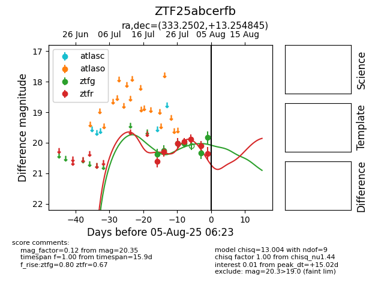

Target ZTF25abcerfb at 2025-08-05 07:33, see:
FINK: fink-portal.org/ZTF25abcerfb
Lasair: lasair-ztf.lsst.ac.uk/objects/ZTF25abcerfb
ALeRCE: alerce.online/object/ZTF25abcerfb
alt names
ZTF25abcerfb (ztf,fink)
coordinates:
equatorial (ra, dec) = (333.2502,+13.25484)
galactic (l, b) = (74.2744,-34.25247)
photometry
last ztfg=19.83, ztfr=20.35
6 ztfg, 7 ztfr detections
